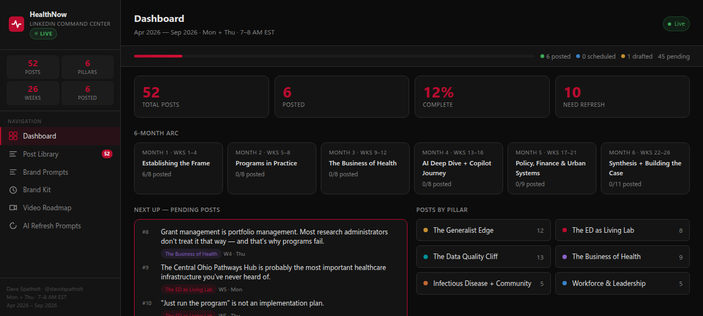

Strategic Operations & Data
Directing budgeting, grant management, data systems, and team leadership for NIH-funded emergency medicine research at Ohio State. The operational backbone of a multi-million-dollar research program.
My experience →What I Do
Directing budgeting, grant management, data systems, and team leadership for NIH-funded emergency medicine research at Ohio State. The operational backbone of a multi-million-dollar research program.
My experience →Leading data and operations for HealthNow — an ED-based HIV, HCV, and SUD screening and linkage-to-care program serving 130,000+ patients annually at Ohio State.
See the program →Supporting a portfolio of studies on opioid decision-making, trauma recovery, and health equity — from data architecture to grant logistics to publication support.
Research →REDCap, SQL, Python, R, Power BI, git, LLMs — the informatics infrastructure that makes research reproducible and operations measurable.
Tools →Featured Work

Automated grant and funding opportunity monitoring with LLM enrichment. Scrapes sources, enriches with AI, presents on a live dashboard. Cron-scheduled with email delivery.
GitHub →Nurse scheduling system with OR-Tools CP-SAT optimization, MS Shifts Excel round-trip, and interactive Colab UI with ipywidgets. Shift coverage enforcement and ML integration hooks.
GitHub →A Pebble/Rebble watchface that turns a calendar into a 24-hour circular dial. Built for glanceable schedule awareness and private beta distribution.
Product page →AI-powered orchestration of research data documentation — automating metadata extraction, study documentation, and data management workflows.
GitHub →Hub
Research areas, publications, grants, and ongoing projects in opioid decision-making, trauma recovery, SUD prevention, and health equity.
Career timeline, roles at Ohio State, education, certifications, and links to my LinkedIn and resume.
Notes, deep dives, and things I'm thinking about — research methods, tool building, and lessons learned.
Who I am, my background, what drives my work at the intersection of health services research and software development.

Content strategy dashboard for the HealthNow LinkedIn cadence. Snapshot from the live planning interface.
Snapshot →AI agent framework powering much of my automation. Docs · Config
{kind=link}